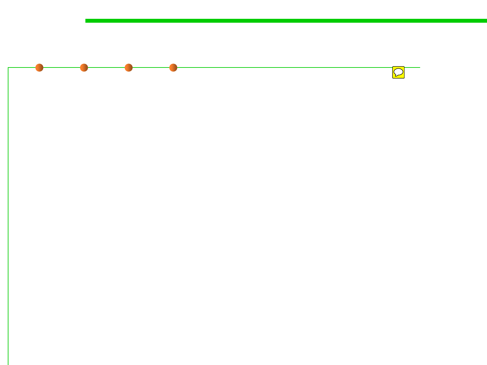

1.1 Multi-Dimensional Views of Software Construction
High-level concepts of run-time software
▪ Executable programs: The sequence of machine-readable
instructions that the CPU executes, along with associated data
values.
– This is the fully compiled program that’s ready to be loaded into the
computer’s memory and executed.
▪ Libraries: Collections of commonly used object code that can be
reused by different programs.
– Most operating systems include a standard set of libraries that developers
can reuse, instead of requiring each program to provide their own.
– A library can’t be directly loaded and executed on the target machine; it
must first be linked with an executable program.